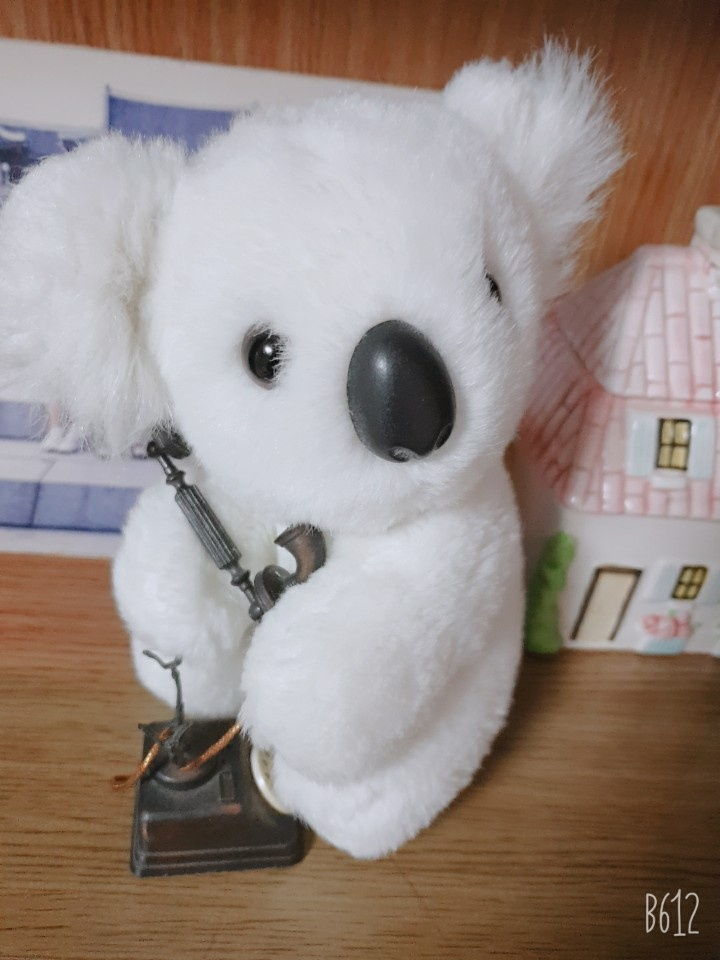

 긴급한 통화 중인 알라방
ALRA PARK은 ALRA FOREST의 창립자입니다. 오스트레일리아 브리즈번 출신으로서 2016년 박또리-오스트레일리아 워홀러-에 의해 20달러에 입양이 되었습니다. 처음에 그는 매우 수줍은 성격을 가지고 있었습니다. 그래서 입양자인 박또리도 그의 진짜 성격을 알아보지 못했습니다. 그의 가족들은 ALRA PARK을 '알라방'이라고 불렀습니다. 알라방은 가족들을 만나고 매우 활달한 성격을 드러냈습니다. 그가 가진 특징들 중 가장 두각을 드러낸 것은 야망이었습니다. 알라방은 자신의 숲을 만들고 싶어했고, 자신의 나라를 만들고 싶어했습니다. 큰 숲을 왕국처럼 만들어 그곳에 군림하기를 원했고 이미 그 곳의 이름을 "ALRA FOREST"라고 이름 붙였습니다. 이 홈페이지는 그런 창립자의 의견을 수렴하여 만들어진 것입니다. 이는 창립자만을 위해서 만들어진 것이지만 향후 내용이 얼마든지 바뀔 수 있다는 것을 알려드립니다.